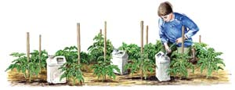
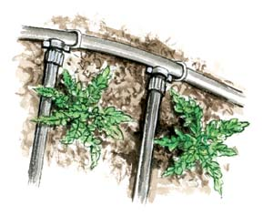
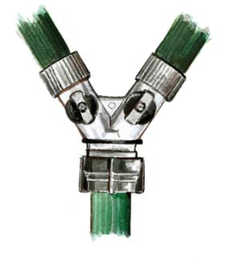

In a perfect growing season, 1 inch of gentle rain falls each week. Gardeners dream of such a season, but plants know better than to expect perfect weather. In response to dry conditions, they close their stomata (the thousands of “breathing” pores located on both sides of the leaves) to limit moisture loss, and send roots deeper in search of water. Roots change their growth pattern to accommodate wet conditions, too, often staying close to the surface where they have better access to oxygen.
These are admirable talents, but few plants are water-handling acrobats. Compared to your area’s native plants, most food-garden plants are amateurs at adapting to your local rainfall patterns, so they need help. Delivering water wisely means minimizing wasted water and wasted time. In more practical terms, it means anticipating your garden’s needs and setting priorities, having a conservation-based watering system in place, preserving water through mulching and finding innovative ways to work out the kinks in your garden’s water supply.
Newly planted seeds, transplants of any kind and plants grown in containers almost always need supplemental water. Plan ahead to provide water in these situations, which can usually be done with hoses and watering cans. To help maintain continuous surface moisture in newly seeded beds, cover them with burlap blankets or thrift store curtains on sunny days until the seeds start to sprout. Use upturned flowerpots or other shade covers to make sure the soil around newly planted seedlings stays moist, and to reduce overall transplanting trauma. Remove the covers after a few days.
The next priority plants are crops that can suffer permanent damage due to inconsistent soil moisture. Lettuce and other salad crops lose their flavor when the soil gets warm and dry, and tomatoes often split when dry conditions give way to a soaking rain. Mulches are the easiest way to avoid fluctuating soil-moisture levels when growing these and other sensitive plants. Biodegradable mulches (leaves, compost, clean grass clippings, etc.) block surface evaporation while suppressing weeds and making important contributions to the soil’s supply of organic matter. You can even double-mulch by covering a sheet-type mulch of newspaper or cardboard with grass clippings or another biodegradable mulch.
Mulching cannot do it all. To enhance the flavor, nutrition and productivity of your garden plants, sooner or later you will have to supply water. Your goal is to simulate drenching rain that replenishes moisture throughout your plants’ root zones. Any soil will accept and retain water better if it contains plenty of organic matter, but when and how you water should be tailored to your soil’s natural tendencies. For example, water percolates slowly through tight clay soil, so a slow, deep soaking once a week works well. Sandy soil has plenty of open spaces that help water move downward quickly, so concentrated drenches twice a week are a better strategy. Site is a factor, too: High, sunny spots always dry out faster than low, shady ones.
Sprinklers are fun to use, but depending on weather conditions, half the water that runs through them can be lost to evaporation and runoff. Occasionally there are good reasons to use a garden sprinkler. If very dry weather hits just as corn shows its silks and tassels, or when tomatoes are in full bloom, a late afternoon sprinkling session will increase overnight humidity levels and enhance pollination by making it easier for pollen grains to fuse with waiting ovaries. Sprinklers also are great for providing moisture for seeds planted in broad blocks, a cover crop of buckwheat, for example. Watering by hand is more efficient than sprinklers, but doing it right eats up hours of time.
You will need to have a standard garden hose at the ready for spot watering, but your best bet for general watering chores is porous soaker hoses that slowly weep water into the soil, or drip lines that emit water in tiny trickles. Either will efficiently distribute water exactly where it’s supposed to go, with little or no waste. You can put a simple system together as you plant your garden, and change the location of the soaker hoses or drip lines as crops come and go. For maximum versatility, limit the length of soaker or drip hoses to less than 50 feet, and install pop-in connectors to the female (incoming) ends of each hose.
Soaker hoses and drip lines (see illustration in Image Gallery) depend on pressure from a faucet to push water through them, but if you have a little elevation to work with, you may be able to set up a gravity-fed bucket drip system.
To supply water to plants outside your drip lines or soaker hose network, punch a few small holes into the sides of plastic milk jugs or kitty-litter jugs an inch from the bottom, fill them with water, and let them drip their moisture into the root zones of thirsty plants. The water that remains in the bottom of the jugs, below the holes, will keep them from blowing away. (See illustration in Image Gallery.)
Mother’s online Archive includes in-depth articles on using graywater (slightly dirty water from bathing and cooking) and for collecting roof runoff in cisterns and rain barrels, but harvesting rain for garden use can begin in the garden. As long as you’re hoeing out weeds, use your hoe to create shallow furrows along planted rows to detain rain that would otherwise flow into pathways. In similar fashion, you can make raised rims around beds to create a basin effect. Should you get too much rain, one decisive swipe with a hoe or spade will open the earthen floodgates.
You also can collect rain in containers stationed in or near the garden. Last summer when my neighbors downsized their herd of cows, I gained use of an oval-shaped 50-gallon stock tank, which partially refills itself with each passing shower. The sun-warmed water is great for rinsing dirty hands or washing pots, or for dipping out to pour on parched plants. Maintenance is limited to dumping the tank often enough to interrupt the seven-day life cycle of mosquitoes, or adding mosquito-killing Bt (Bacillus thuringiensis, an organic pesticide) doughnuts to the water.
If your house has gutters and is located slightly higher than your garden, you may be able to connect the downspouts to a temporary plastic pipeline to distribute the roof runoff directly into your garden. If you have experience with this technique, please share what you’ve learned by posting in the comments section below.
Good watering hardware can save hours of time - and hundreds of gallons of water - in the course of a growing season.
Every garden will benefit by using permanent beds and paths, rather than tilling the entire garden every year. Using permanent beds allows you to concentrate water and fertilizers where they are needed and keep paths dryer and mulched to prevent weeds. Perhaps most importantly, by never walking on the beds you avoid compacting the soil. Use dense planting in the beds as a hedge against water loss in dry weather - when a good cover of leaves shades the soil, surface evaporation is cut by more than half.
If you live in a climate with high rainfall or dense clay soil, use raised beds to improve soil drainage. Drainage is critical for most food crops, because roots in waterlogged soil are deprived of the oxygen they require. Raised beds also allow soil to warm up earlier in spring.
But if you live where rain seldom falls, you should make sunken beds, rather than raised ones. This thousand-year-old Zuni Indian method is sometimes known as waffle gardening. By planting in slightly recessed beds, when rain does fall, it will flow toward the plants’ roots. Between rains, young plants will be protected from drying winds.
|
 ELAYNE SEARS You can water individual plants using a kitty litter jug by putting holes on the bottom edges of the jug about an inch up from the bottom. Fill the jug with water and it will slowly seep into the root zone of the adjacent plants. |
 ELAYNE SEARS The most efficient method of watering is with drip irrigation lines, such as these, or with soaker hoses placed between rows of crops. |
 ELAYNE SEARS Outfit your outdoor faucets with splitters so you can attach two hoses to each one. |